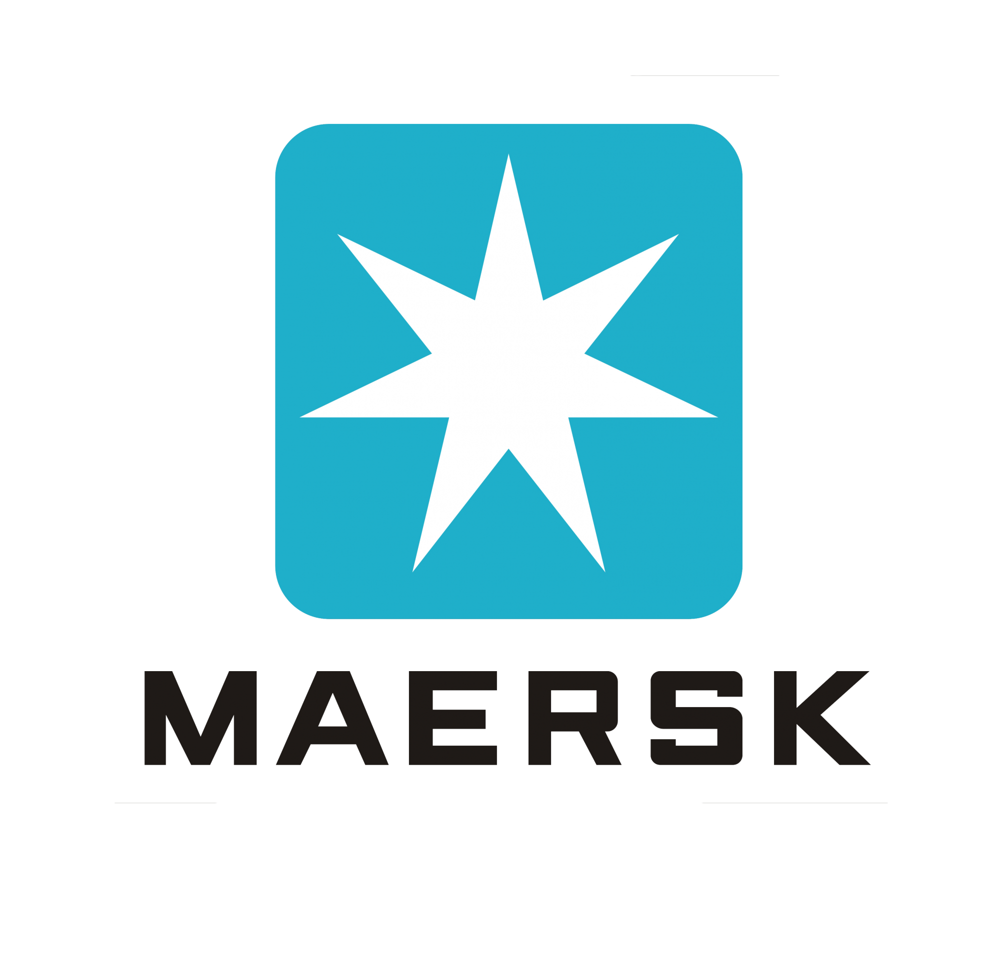
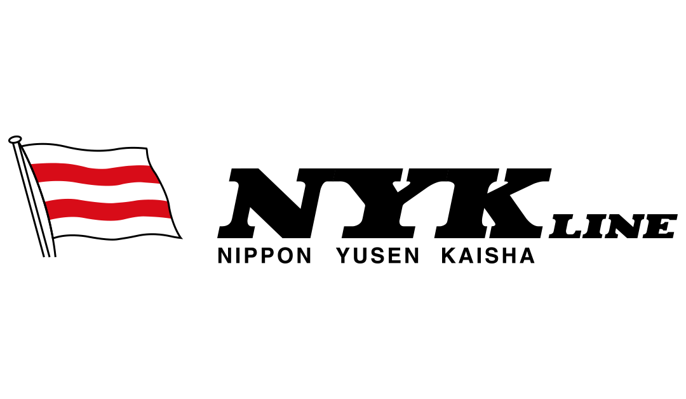
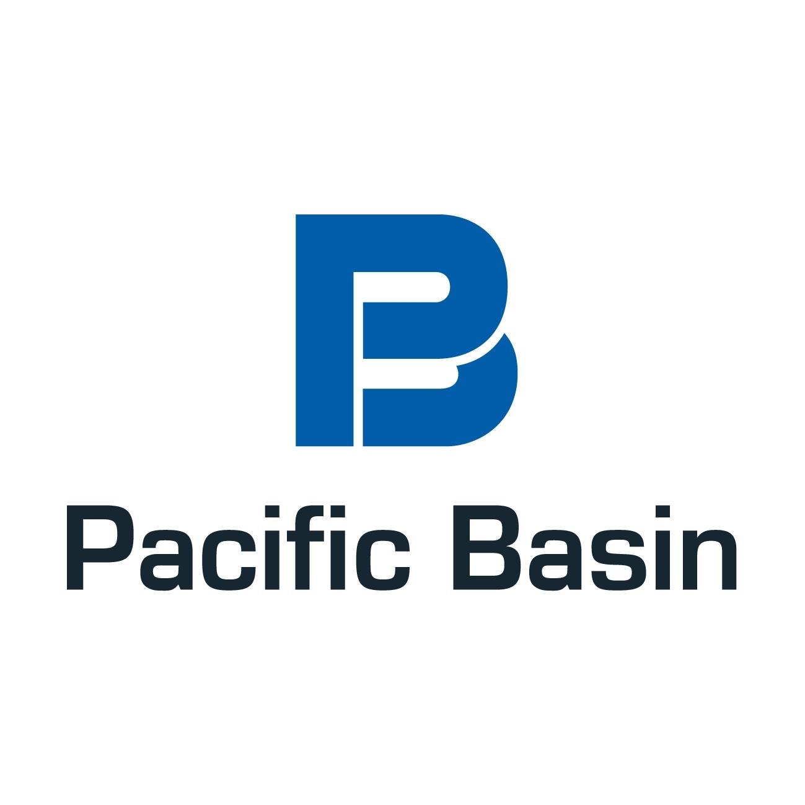
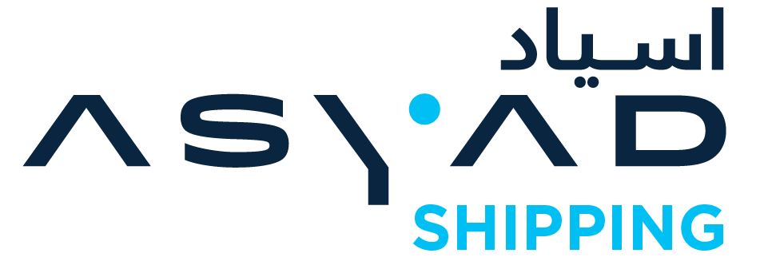
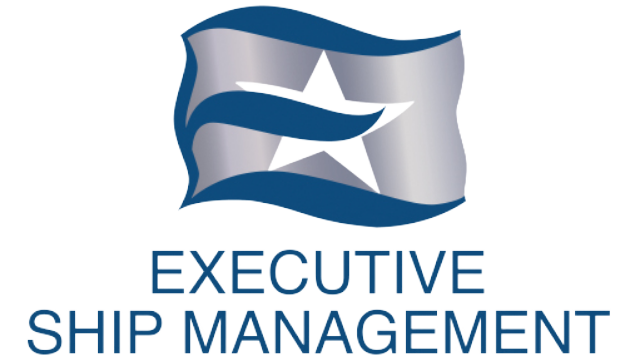

FrontM Exchange
Marketplace layer
Products, services, apps.
frontm.ai is the purpose-built developer environment for maritime AI applications, integrations, workflows, and ship-shore deployment. Use it to create apps, agents, automations, and services that can run across the FrontM ecosystem — from ships and shore teams to crews, partners, and the FrontM Exchange.
FrontM connects the full maritime innovation cycle: build with Studio, deploy through Fabric, and distribute products, services, and apps through Exchange.
Marketplace layer
Products, services, apps.
Builder layer
Apps, agents, workflows.
Foundation layer
Runtime, data, integration.
Exchange brings together the products, services, and apps built on frontm.ai — giving maritime companies one place to discover, adopt, and scale digital solutions.
Maritime does not need another isolated app. It needs a way to build, integrate, deploy, and scale AI-ready solutions across the whole operating environment. That is what frontm.ai enables.
A self-paced Developer Training Programme covering the platform architecture, the LoG.ai methodology, and the framework building blocks for specifying and shipping maritime micro-apps.
Fleet operators, ecosystem organisations, service providers, and systems integrators are already building, distributing, and scaling on frontm.ai.





Maritime teams have no shortage of ideas to improve operations. The challenge is turning them into practical digital solutions — quickly, without adding more fragmented tools. frontm.ai gives owners, managers, and service providers one flexible foundation to launch apps, workflows, agents, and services across vessels, offices, crew, and partners.
Compose apps, agents, and workflows with the low-code builder and the LoG.ai methodology.
Deploy across ship and shore on shared runtime, data, and integration — built for limited bandwidth.
Publish your product, service, or app to platform-ready vessels and crews across the ecosystem.
How the LoG.ai pipeline takes a maritime process from story and tasks through to deployable code.
Read the notesPatterns for building experiences that stay responsive over satcom and intermittent connectivity.
Read the notesFrom packaging and permissions to distribution across platform-ready fleets and crews.
Read the notesPick a day in the next week.
We'll send a calendar invite and a short prep note. See you soon.